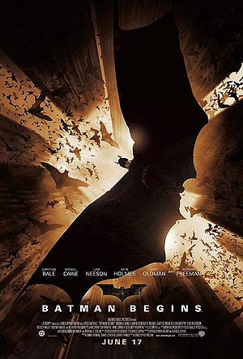
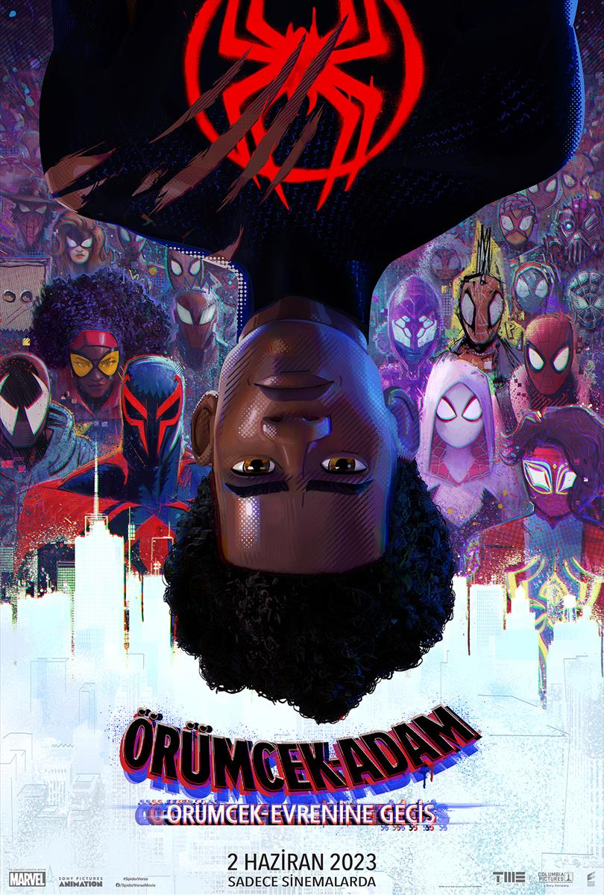

Interstaller
9.5
Yıldızlararası'nda, teknik bilgisi ve becerisi yüksek olan Cooper, geniş mısır tarlalarında çiftçilik yaparak geçinmektedir; amacı iki çocuğuna güvenli bir hayat sunmaktır. Onlarla yaşayan Büyükbaba Donald çocuklara göz kulak olurken, henüz 10 yaşındaki kızı Murph şaşırtıcı bir zekaya sahiptir. Geçmişte bıraktığı biliminsanı kariyerini özleyen Cooper'un karşısına bir gün beklenmedik bir teklif çıkar ve ailesinin, dahası insanlığın güvenliği için zorlu bir karar alması gerekir...

Batman Başlıyor
8.2
Batman Başlıyor'da, ailesi öldürülen playboy Bruce Wayne, Henri Ducard ve Ra’s Al Ghul’ın yol göstericiliğinde Asya’ya taşınır. Gotham adeta şeytanlarla, kötü hesapların peşinde olan adamlarla kuşatılmış bir yerdir. Suç olayları bitmek bilmez. Bruce Wayne’in amacı bu şehre adaleti getirerek insanların ruhundaki korkuları ortadan kaldırmakve onları huzurlu kılmaktır.Yol göstericisi Ra’s al Ghul her ne kadar ona çok şey öğreten insan olsa da bir başka açıdan yoluna engel de teşkil etmektedir. Christopher Nolan’dan gelen bir Batman üçlemesinin ilk filmidir.

Batman Kara Şövalye
9.0
"Kara Şövalye", Joker'in ortaya çıkmasıyla yeniden harekete geçen Batman'in hikayesini anlatır. Joker, Gotham'ı eski kaotik günlerine döndürmek için dehasını kullanırken, Batman, Teğmen Gordon ve Savcı Harvey Dent ile birlikte şehri korumaya çalışır. Batman, kendi varlığının suç oranını azaltıp azaltmadığını sorgular ve Gotham'ın geleceği için derin bir iç hesaplaşma yaşar.

Batman Kara Şövalye Yükseliyor
8.4
Kara Şövalye Yükseliyor'da terörist lider Bane'nin yaptığı gizli planları durdurmaya bu sefer ne Bruce Wayne'nin ne de Batman'in gücü yeter. Kedikadın Selina Kyle'ı da kendi safına çeken Bane, Gotham kentini ve halkını ciddi bir tehditle karşı karşıya bırakacaktır. Ne yerel kuvvetler, ne kahraman Jim Gordon ne de ordu olacakların önüne geçemez. Batman ilk kez kendisinden daha güçlü bir rakibe karşı mücadele verecektir...

The Truman Show
8.2Truman Show, sinema tarihinin en yaratıcı senaryolarından birine sahiptir. Dünyanın en güzel adalarından birinde yaşayan halk, ütopik bir hayat sürmektedir. Başkarakter Truman, güzel bir eşe ve mutlu bir hayata sahiptir. Ancak bir gün öldüğünü sandığı babasını caddede gördüğünde hayatı değişir. Babasının bir anda ortadan kaybolması, Truman'ın hayatındaki tuhaflıkları fark etmesine yol açar. Gün geçtikçe daha fazla gizemle karşılaşan Truman, hayatının aslında bir televizyon şovu olduğunu keşfeder. Doğduğu günden itibaren kameralar önünde yaşayan Truman, bu yapay dünyanın farkına varınca, gerçekliği sorgular ve bu durumdan kaçmanın yollarını arar.
Ters Yüz
8.1Ters Yüz, küçük bir çocuğun hikayesini anlatıyor. Küçük Riley için hayat, babasının San Francisco’da yeni bir işe başlamasıyla baştan aşağıya değişir. Orta-Batı’daki yaşamını geride bırakan Riley'ı şimdi yeni bir ev, okul ve arkadaşlar beklemektedir. Peki içindeki duyguları o ne söyler? Neşe (Amy Poehler), Korku (Bill Hader), Öfke (Lewis Black), Nefret (Mindy Kaling) ve Üzüntü (Phyllis Smith)... Riley'in zihninin içinde yaşayan, ona günlük hayatında tavsiyeler veren duyguları bu yeni hayata alışırken ufak bir kaosa neden olacaktır. Neşe, Riley’nin en önemli duygusudur ve onu hep pozitif tutmaya çalışır ama diğer duygular bu yeni hayatına uyum sağlama konusunda biraz şaşkındır...

Ters Yüz 2
7.9
Ters Yüz 2, artık bir ergen olan ve çok daha çılgın, kişiselleştirilmiş duygularla uğraşmak zorunda olan Genç Riley'nin maceralarını konu ediyor. Riley, artık tam bir ergendir ve bu durum kumanda merkezinde karışıklığı neden olur. Bu zamana kadar çok iyi çalışan kumanda merkezi yıkımdan geçer çünkü beklenmedik bir duyguya yer açmak zorundadır. Yıllardır merkezi başarılı bir şekilde yöneten Neşe, Üzüntü, Öfke, Korku ve Tiksinti, aralarına Kaygı, Gıpta, Bıkkınlık ve Utanç’ın katılmasıyla karmaşık duygular içerisindedir.

Örümcek-Adam 1
7.4
Peter Parker, sosyal hayatında pek de başarılı olamayan bir öğrencidir. Okulda akranları tarafından sürekli olarak hor görülmekte ve aşık olduğu Mary Jane'i sadece hayal edebilmektedir. Bir gün okulun çıkardığı bir gezide üzerinde deneyler yapılan bir örümcek tarafından ısırılır. Peter Parker'ın sıradan hayatı baştan aşağı değişecektir. Peter, örümceğin içgüdüsel yeteneklerini kazanacak ve bunu şehrin karanlığında kaybettiği amcasının intikamını almak üzere kullanacaktır. Peter, artık 'Örümcek Adam' olacaktır.

Örümcek-Adam 2
7.5
Peter Parker, çifte hayat yaşayıp Örümcek Adam olarak suçlularla savaşmaktan yorgun düşmüş mutsuz bir adamdır. Hayatı inişe geçmiştir: Sevdiği kadın başka biriyle nişanlanmış, dersleri kötüye gitmekte ve Daily Bugle gazetesi onu suçlu olarak ilan etmektedir. Kırılma noktasına ulaşan Peter, Örümcek Adam kimliğinden vazgeçmeye karar verir. Ancak, başarısız bir deney sonucu eksantrik bilim adamı Doktor Otto Octavius, dört uzun dokunaçlı bir cani olan Doktor Ahtapot’a dönüşür. Peter, belki de Örümcek Adam'ın geri dönme zamanı geldiğini düşünmeye başlar. Sam Raimi’nin ikinci Örümcek Adam filmi, ilkinden de fazla ilgiyi hak ediyor.

Örümcek-Adam 3
6.3
Peter Parker ya da Örümcek Adam, bir kez daha izleyicisi ile buluşuyor. Her ne kadar nihayet hayatını bir düzen üzerine kurmuş olsa da Peter Parker özel hayatı bir yanda, Örümcek Adam kimliği diğer yanda yaşarken zorlanır. Örümcek Adam olmanın en temel tehlikesi ise her an nerede geleceğini kestiremediği tehlikeler ile kuşatılmış olma ihtimalidir. Bu sırada Peter’ın rahatsız edici bir kibri çıkar ortaya. Sevenleri bu durumdan olumsuz etkilenirler. Sadece üzülmek açısından değil, onun sırf bu özelliğinden ötürü Venom ile Kum Adam’ın saldırılarına kulak asmayarak ailesini ve tüm sevdiklerini farkında olmadan tehlikeye atacaktır.

Örümcek-Adam: Örümcek-Evrenine Geçiş
8.6
Spider-Man: Into the Spider-Verse, radyoaktif bir örümcek tarafından ısırılmasıyla bambaşka bir dünyaya adım atıp, özel yeteneklerle donanan Miles Morales'in maceralarını konu ediyor. Gwen Stacy ile yeniden bir araya gelen Miles, Çoklu Evrenleri geçer. Miles bu sırada ne olursa olsun orayı korumakla yükümlü olan Örümcek - İnsanlarla karşılaşır. Büyük bir tehdit ile karşı karşıya olan kahramanlar, ne yapacaklarını bilemeyince Miles, kendisini diğer Örümcekler’in karşısında bulur. Miles, en sevdiği insanları büyük bir tehdite karşı koruyabilmek için yeteneklerini kullanmak zorundadır.

Örümcek-Adam: Örümcek Evreninde
8.4
"Örümcek-Adam: Örümcek Evreninde," genç Miles Morales’in süper güçler kazandıktan sonra dünyayı kurtarma hikayesini anlatır. Polis memuru bir baba ve kendini işine adamış bir annenin çocuğu olan Miles, okuluna uyum sağlamakta zorlanırken bir radyoaktif örümcek tarafından ısırılır ve zehir atma, kamuflaj gibi yetenekler kazanır. Peter Parker, Spider-Gwen, Spider-Man Noir ve Spider-Ham’ın yardımıyla süper kahraman olmanın sorumluluklarını öğrenir ve kötülüğe karşı savaşmak için harekete geçer.
Yukarı Bak
8.3
Yukarı Bak'ta rastlantı eseri yolları kesişen iki çocuk, yıllarca sürecek tatlı ve dokunaklı bir hikayenin başkahramanlarıdır. Maceracı doğan ve hayattaki her şeye dair çocuksu saf meraklar barındıran Ellie’nin tek hayali dünyayı gezebilmektir. Carl ise sessizliği ve dinginliğiyle örttüğü maceraperestliği ve kocaman kalbiyle Ellie’nin tek isteğini gerçekleştirebilmeyi dilemektedir. İki küçük çocuk büyür, evlenir, yaşlanır... Ölüm Ellie’nin kapısını çalar, Carl ise sevdiğinden kalan tek şeyi, bu çocuksu hayali gerçekleştirmeye koyulur.
Harry-Potter Felsefe Taşı
7.6
Harry Potter'ın ailesi ağır ve şaibeli bir trafik kazasında ölmüştür. Öksüz ve yetim kalan Harry'nin sığınabileceği tek yer, arasının pek de iyi olmadığı teyzesinin yanıdır. Harry, tüm hayatı boyunca idari ailesi tarafından kötü davranışlarla büyütülür. Ancak Harry Potter artık 11 yaşındadır ve Harry'nin hayalleri ve yetenekleri günden güne su yüzüne çıkmaktadır. Kısa süre sonra Hogwarts büyücülük okuluna davet edilir. Artık tek amacı, ailesinin bu şüpheli kazasını araştırmak ve muhattaplarını cezalandırmaktır.
Harry-Potter Sırlar Odası
7.4
Harry'nin yanlarında kalmak zorunda olduğu için yanlarında kaldığı ailesi olan Dursley'ler Harry'ye kötü davranmaya devam etmektedirler. Harry de bu eziyetten kurtulmak için bir an önce çok sevdiği okulu Hogwarts'a dönmenin hayallerini kurmaktadır. Vakit gelir ve Harry hazırlanmaya başlar ancak bir elf olan Dobby onu uyararak okula döndüğünde çok büyük bir felaketle karşılaşacağı yönünde uyarır. Sırlar odası açılmıştır ve çok karanlık bir güç Hogwarts'ın üzerinde egemen olmaya başlamıştır.
Harry-Potter Azkaban Tutsağı
7.9
Sevilen kahramanın yeni bir filmi daha. Harry Potter, akrabaları ile zor zamanlar geçirmektedir. Ailesine kötü davranan, Vernon Amca’nın kız kardeşi Marge’a büyü yapıp kaçar. Okul dışında büyü yaptığı için korksa da cezalandırılmadığını fark edince çok şaşırır. Ancak çok geçmeden, tehlikeli bir suçlu olan Lord Voldemort’un yardımcısı Sirius Black’in Azkaban hapishanesinden kaçtığını öğrenir. Dark Lord’un intikamını almak için Harry’i öldürmek istemektedir. Hapishanedeki büyük suçlulardan sorumlu, Ruh Emiciler etrafa huzursuzluk saçmaktadırlar. Öte yandan Lupin’in de sakladığı bir sır var gibi görünmektedir.
Harry-Potter ve Ateş Kadehi
7.7
Harry’nin Hogwart’daki dördüncü yılı başlamak üzeredir. Yaz tatilinde arkadaşları ile keyifli zamanlar geçirmiştir. Bu sezonda iddialı bir ürkütücü olaylar silsilesinden geçecek olduğundan henüz haberdar değildir. Lord Voldemort ile burun buruna gelecek olması, yeni okul yılının en çarpıcı hikayesini oluşturacaktır. Quidditch Dünya Kupası finalini izleyecek ve aynı zamanda da birbirine rakip olan iki büyücülük okulunun en gözdeleri ile beraber turnuvaya gireceklerdir. Önceki bölümlerde de olduğu üzere yine heyecan dolu maceralarla karşımızda.
Harry-Potter ve Zümrüdüanka Yoldaşlığı
7.5
Harry, yalnız geçen bir yazın ardından Hogwarts'a döner. Öğrenciler ve ailelerinin çoğu, Voldemort'un geri döndüğüne inanmaz ve Sihir Bakanı da gereken önlemleri almakta gecikir. Bu durum, Harry ve diğer büyücüleri tehdit altında bırakır. Harry, Cho Chang'a karşı hislerini bastıramazken, Sihir Bakanlığı tarafından gönderilen Dolores Umbridge, okulda düzeni kabusa çevirir. Harry, Voldemort'un aradığı bir gizemin peşinde olduğunu fark eder. Böylece, Hogwarts'taki en zor yılına başlar.

Harry-Potter ve Melez Prens
7.6
Fantastik Sinema fenomeni Harry Potter, bu defa serinin 6. kitabı Harry Potter ve Melez Prens uyarlamasıyla karşımızda. Sevimli kahramanımız Potter, Hogwarts’taki 6. Yılında bir sürpriz ile karşılaşır. Tesadüfen, üzerinde ‘bu kitap Melez Prens’e aittir’ yazılı bir kitap bulmasıyla kitabın içindeki büyüleri kurcalaması sonucu Melez Prens’in gizemini keşfetmeye koyulacaktır. Bilge büyücü Dumbledore’un yol arkadaşlığı, karanlık düşmanı Voldemort ile hesaplaşmasını kolaylaştırsa da, Harry Potter ve arkadaşlarını bu defa çok çetrefilli bir savaş beklemektedir.
.jpg)